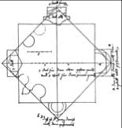

Ceux que la longévité des ramifications néo-pythagoriciennes intrigue, trouverons dans cette page quelques uns des thèmes spécifiques qui irriguent en profondeur cet ouvrage.

La rotation du carré est l'image la plus fréquemment associée
à la production de la forme. Elle illustre les proportions de la section harmonique
(Traité de Lutherie pp.32-37).
.